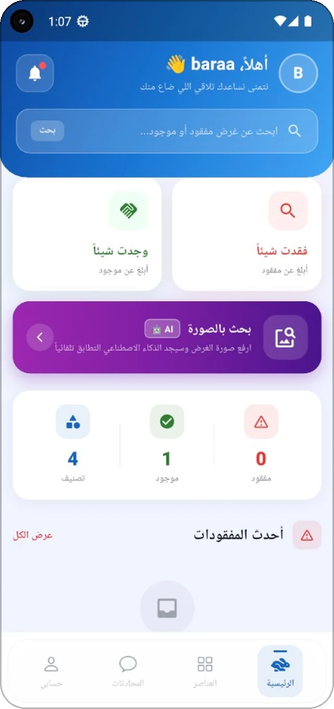
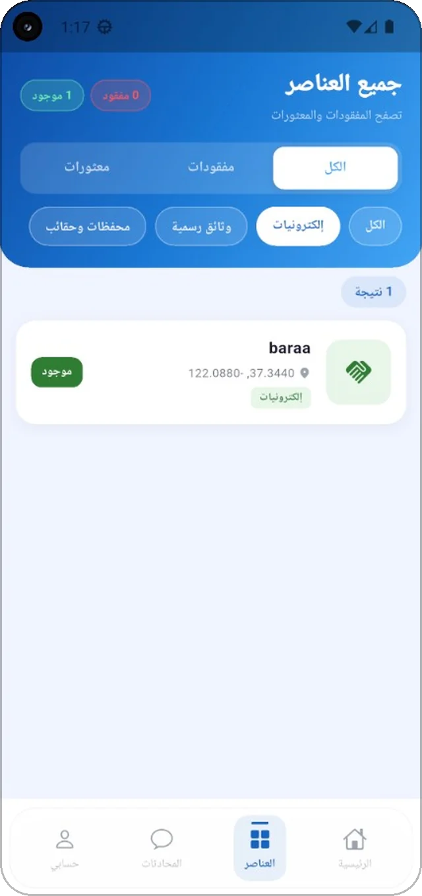
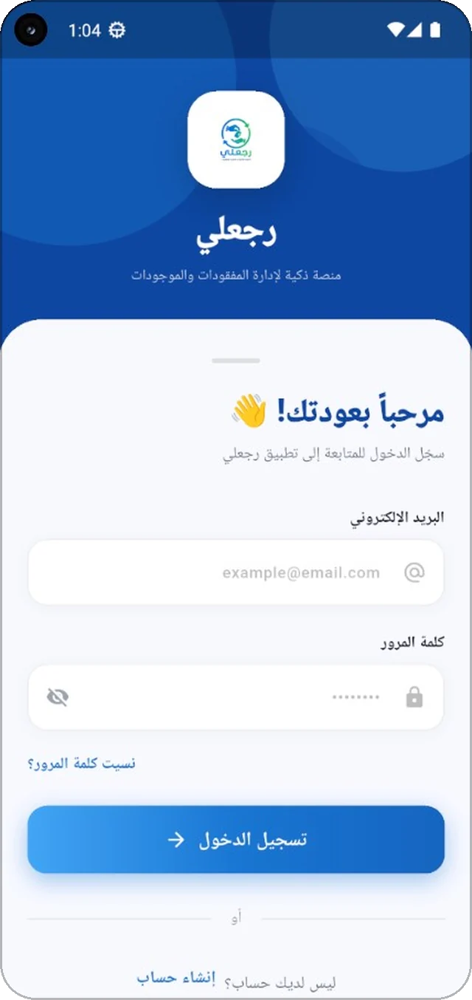
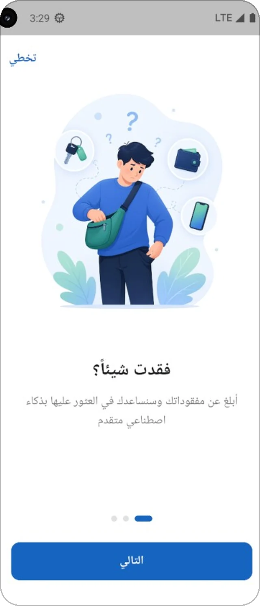
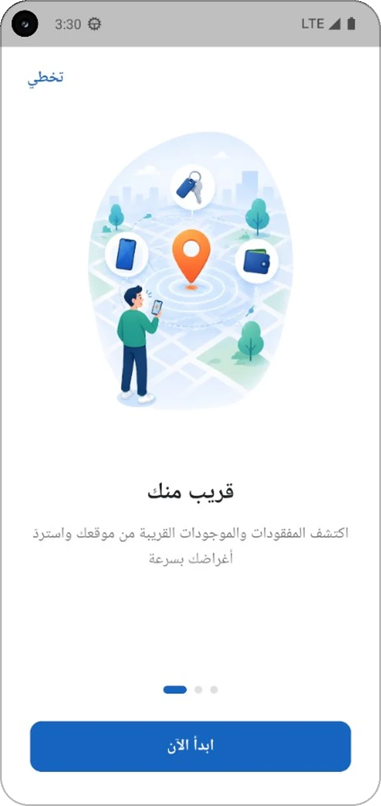
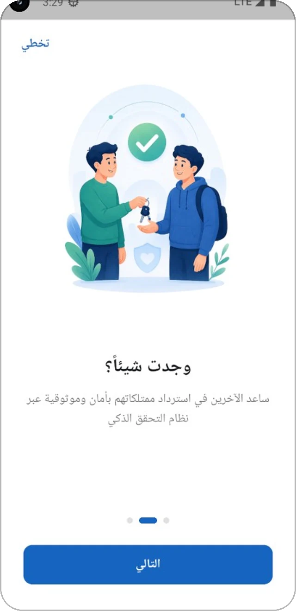

← الأعمال
رجعلي
منصة لإدارة المفقودات والموجودات
تطبيق يجمع من فقد غرضاً ومن وجد غرضاً ليس له في مكان واحد.
- المنصة
- أندرويد
- التقنيات
- Flutter
- الدور
- مطوّر ومحلّل أنظمة
- اللقطات
- من التطبيق وهو يعمل


عن العمل
إذا ضاع منك غرض أو وجدت غرضاً ليس لك، تبلّغ عنه من التطبيق. يصنّف رجعلي البلاغات ويعرضها مع الموقع وحالة البلاغ، ويتيح البحث عن غرضك بصورته بمساعدة الذكاء الاصطناعي.
بلاغان بنقرة
«فقدت شيئاً» و«وجدت شيئاً».
بحث بالصورة
الذكاء الاصطناعي يقارن صورتك بالبلاغات.
تصنيف وتصفية
إلكترونيات ووثائق ومحافظ وحقائب.
تواصل من داخل التطبيق
دون مشاركة رقمك.
إحصاءات سريعة
عدّادات للمفقود والموجود والمُسلَّم.
الشاشات



